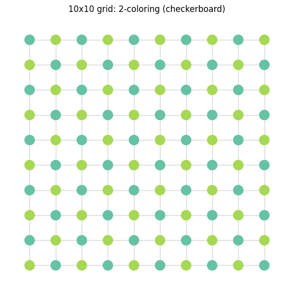
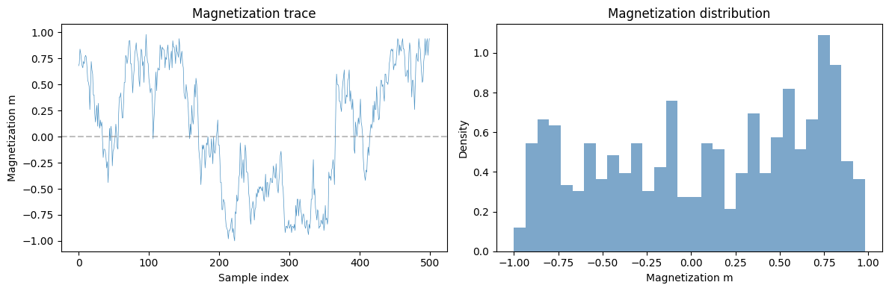
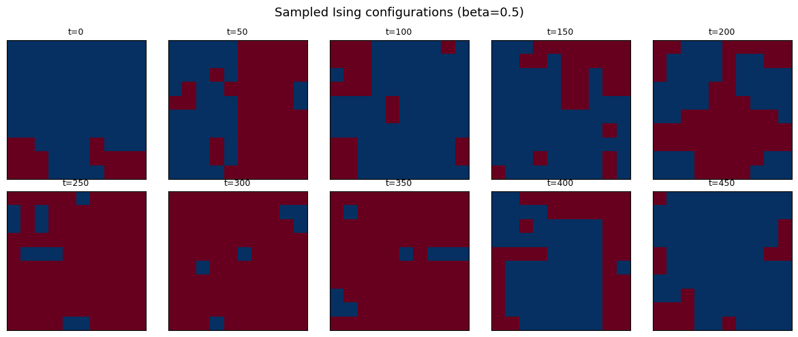
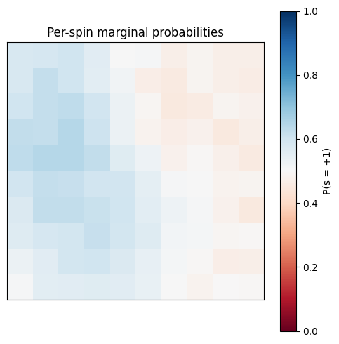
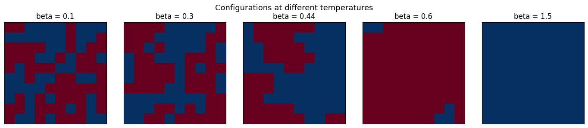
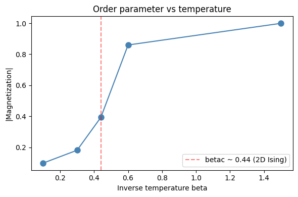
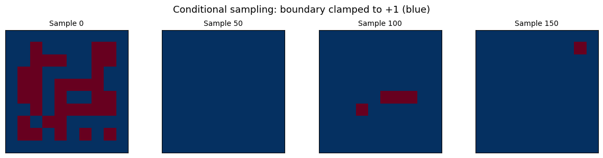

Your First Sampler: Block Gibbs on a Grid#
This notebook explains how Gibbs sampling works, why we need block updates for efficient GPU execution, and walks through building a complete sampling pipeline from scratch using hamon's Ising model APIs.
By the end you will: - Understand the Gibbs sampling algorithm and its convergence properties - Know why block updates are essential for GPU-accelerated sampling - Use graph coloring to identify independent blocks - Build and run an Ising model sampling program step-by-step - Visualize how temperature controls the sampled configurations
What is Gibbs sampling?#
Given an energy-based model over \(N\) variables, we want to draw samples from the Boltzmann distribution \(P(x) \propto \exp(-E(x))\). When \(N\) is large, we can't enumerate all states, so we use Markov chain Monte Carlo (MCMC).
Gibbs sampling is one of the simplest MCMC methods:
- Start with an initial configuration \(x^{(0)}\)
- For each step \(t\):
- Pick a variable \(x_i\)
- Sample \(x_i\) from its conditional distribution \(P(x_i \mid x_{\setminus i})\), holding all other variables fixed
- After enough steps, the samples approximate the target distribution
The conditional distribution only depends on \(x_i\)'s neighbors in the factor graph. This locality makes Gibbs sampling natural for graphical models.
The problem with sequential updates#
Updating one variable at a time means \(N\) sequential steps per sweep. GPUs are designed for massive parallelism — they want thousands of operations running simultaneously. Sequential Gibbs is a terrible fit.
The solution: block Gibbs sampling.
Block Gibbs sampling and graph coloring#
If two variables \(x_i\) and \(x_j\) are conditionally independent given all others (i.e., they share no factor), we can update them simultaneously without violating the Gibbs sampling invariant.
Finding the largest sets of mutually independent variables is exactly the graph coloring problem on the interaction graph: - Each color class is a set of variables with no edges between them - All variables in a color class can be updated in parallel - We cycle through color classes sequentially
For a 2D grid, this gives the familiar checkerboard pattern: 2 colors, so each sweep requires only 2 sequential steps regardless of grid size.
import jax
import jax.numpy as jnp
import matplotlib.pyplot as plt
import networkx as nx
import numpy as np
# Build a 10x10 grid graph
ROWS, COLS = 10, 10
G = nx.grid_2d_graph(ROWS, COLS)
# Graph coloring
coloring = nx.coloring.greedy_color(G, strategy="DSATUR")
n_graph_colors = max(coloring.values()) + 1
print(f"Graph coloring uses {n_graph_colors} colors")
# Visualize
fig, ax = plt.subplots(figsize=(6, 6))
pos = {(r, c): (c, -r) for r in range(ROWS) for c in range(COLS)}
node_colors = [coloring[n] for n in G.nodes()]
cmap = plt.cm.Set2
nx.draw(
G,
pos,
ax=ax,
with_labels=False,
node_color=node_colors,
cmap=cmap,
vmin=0,
vmax=n_graph_colors,
node_size=200,
edge_color="lightgray",
width=1,
)
ax.set_title(f"10x10 grid: {n_graph_colors}-coloring (checkerboard)")
plt.tight_layout()
plt.show()

All nodes of the same color can be updated simultaneously — this is the essence of block Gibbs sampling. On a 10×10 grid that's 50 parallel updates per step instead of 100 sequential ones. The advantage grows with system size.
Building a sampling program step by step#
Let's build a complete Ising model sampling program using hamon's core APIs. The Ising model has binary spin variables \(s_i \in \{-1, +1\}\) with energy:
from hamon import SpinNode, Block, SamplingSchedule, sample_states
from hamon.models.ising import IsingEBM, IsingSamplingProgram, hinton_init
# Step 1: Create SpinNode instances (one per grid site)
nodes = [[SpinNode() for _ in range(COLS)] for _ in range(ROWS)]
flat_nodes = [nodes[r][c] for r in range(ROWS) for c in range(COLS)]
# Step 2: Define edges (nearest-neighbor couplings)
edge_list = []
for r in range(ROWS):
for c in range(COLS):
if c + 1 < COLS:
edge_list.append((nodes[r][c], nodes[r][c + 1]))
if r + 1 < ROWS:
edge_list.append((nodes[r][c], nodes[r + 1][c]))
# Step 3: Set model parameters
n_sites = ROWS * COLS
n_edges = len(edge_list)
biases = jnp.zeros(n_sites) # no external field
weights = jnp.ones(n_edges) * 1.0 # uniform ferromagnetic coupling
beta = jnp.array(0.5) # moderate temperature
# Step 4: Build the IsingEBM
ebm = IsingEBM(flat_nodes, edge_list, biases, weights, beta)
print(f"Model: {n_sites} spins, {n_edges} couplings, beta = {float(beta)}")
# Step 5: Partition nodes into free blocks using graph coloring
color_groups = [[] for _ in range(n_graph_colors)]
for (r, c), color in coloring.items():
color_groups[color].append(nodes[r][c])
free_blocks = [Block(group) for group in color_groups]
# Step 6: Build the sampling program
program = IsingSamplingProgram(ebm, free_blocks, clamped_blocks=[])
# Step 7: Initialize with Hinton initialization (sample from marginal bias)
key = jax.random.key(0)
key, init_key = jax.random.split(key)
init_state = hinton_init(init_key, ebm, free_blocks, ())
# Step 8: Define the sampling schedule and collect samples
schedule = SamplingSchedule(n_warmup=200, n_samples=500, steps_per_sample=2)
key, sample_key = jax.random.split(key)
obs_block = Block(flat_nodes)
samples = sample_states(sample_key, program, schedule, init_state, [], [obs_block])
samples = samples[0] # shape: (500, 100)
print(f"Collected {samples.shape[0]} samples of {samples.shape[1]} spins")
Visualizing the results#
# Convert boolean (True=+1, False=-1) to spin values
spin_samples = 2 * samples.astype(jnp.float32) - 1
# Magnetization per sample: m = mean(s_i)
magnetization = jnp.mean(spin_samples, axis=1)
fig, axes = plt.subplots(1, 2, figsize=(12, 4))
# Trace plot
axes[0].plot(magnetization, linewidth=0.5, alpha=0.8)
axes[0].set_xlabel("Sample index")
axes[0].set_ylabel("Magnetization m")
axes[0].set_title("Magnetization trace")
axes[0].axhline(0, color="gray", linestyle="--", alpha=0.5)
# Histogram
axes[1].hist(
np.array(magnetization), bins=30, density=True, alpha=0.7, color="steelblue"
)
axes[1].set_xlabel("Magnetization m")
axes[1].set_ylabel("Density")
axes[1].set_title("Magnetization distribution")
plt.tight_layout()
plt.show()

# Show some sampled configurations
fig, axes = plt.subplots(2, 5, figsize=(12, 5))
for idx, ax in enumerate(axes.flat):
sample_idx = idx * (len(samples) // 10)
grid = np.array(samples[sample_idx]).reshape(ROWS, COLS).astype(float)
ax.imshow(grid, cmap="RdBu", vmin=0, vmax=1, interpolation="nearest")
ax.set_title(f"t={sample_idx}", fontsize=9)
ax.set_xticks([])
ax.set_yticks([])
fig.suptitle(f"Sampled Ising configurations (beta={float(beta)})", fontsize=13)
plt.tight_layout()
plt.show()

# Per-spin marginal probability P(s_i = +1)
marginals = jnp.mean(samples.astype(jnp.float32), axis=0).reshape(ROWS, COLS)
fig, ax = plt.subplots(figsize=(5, 5))
im = ax.imshow(marginals, cmap="RdBu", vmin=0, vmax=1, interpolation="nearest")
plt.colorbar(im, ax=ax, label="P(s = +1)")
ax.set_title("Per-spin marginal probabilities")
ax.set_xticks([])
ax.set_yticks([])
plt.tight_layout()
plt.show()

With zero bias and symmetric ferromagnetic coupling, each spin is equally likely to be +1 or -1, so the marginals should be near 0.5 everywhere. The configurations, however, show local correlations — clusters of aligned spins.
The effect of temperature#
Let's sweep across several values of \(\beta\) to see how temperature affects the sampled configurations.
beta_values = [0.1, 0.3, 0.44, 0.6, 1.5]
all_magnetizations = []
fig, axes = plt.subplots(1, len(beta_values), figsize=(14, 3))
for ax, b_val in zip(axes, beta_values):
# Build model at this temperature
ebm_b = IsingEBM(flat_nodes, edge_list, biases, weights, jnp.array(b_val))
prog_b = IsingSamplingProgram(ebm_b, free_blocks, [])
key, k1, k2 = jax.random.split(key, 3)
init_b = hinton_init(k1, ebm_b, free_blocks, ())
sched_b = SamplingSchedule(n_warmup=300, n_samples=200, steps_per_sample=2)
samp_b = sample_states(k2, prog_b, sched_b, init_b, [], [obs_block])[0]
# Show last configuration
grid = np.array(samp_b[-1]).reshape(ROWS, COLS).astype(float)
ax.imshow(grid, cmap="RdBu", vmin=0, vmax=1, interpolation="nearest")
ax.set_title(f"beta = {b_val}")
ax.set_xticks([])
ax.set_yticks([])
# Track magnetization
spins = 2 * samp_b.astype(jnp.float32) - 1
m = jnp.mean(jnp.abs(jnp.mean(spins, axis=1)))
all_magnetizations.append((b_val, float(m)))
fig.suptitle("Configurations at different temperatures", fontsize=13)
plt.tight_layout()
plt.show()

# Plot |m| vs beta
betas_plot, mags_plot = zip(*all_magnetizations)
fig, ax = plt.subplots(figsize=(6, 4))
ax.plot(betas_plot, mags_plot, "o-", color="steelblue", markersize=8)
ax.axvline(
0.4407, color="red", linestyle="--", alpha=0.5, label="betac ~ 0.44 (2D Ising)"
)
ax.set_xlabel("Inverse temperature beta")
ax.set_ylabel("|Magnetization|")
ax.set_title("Order parameter vs temperature")
ax.legend()
plt.tight_layout()
plt.show()

At low \(\beta\) (high temperature), the system is disordered — spins are nearly random and the magnetization is near zero. At high \(\beta\) (low temperature), the system orders — large domains of aligned spins form and the magnetization is large.
The transition happens near the critical point \(\beta_c \approx 0.44\) for the 2D square lattice Ising model (the exact Onsager solution). We'll study this phase transition in detail in a later notebook.
Clamped variables and conditional sampling#
Sometimes we want to fix (clamp) some variables and sample the rest conditioned on them. This is useful for: - Computing conditional distributions - Modeling boundary conditions in physics - The positive phase of Boltzmann machine training
Let's clamp the boundary spins of our grid to +1 and sample the interior.
# Separate boundary and interior nodes
boundary_nodes = []
interior_nodes = []
for r in range(ROWS):
for c in range(COLS):
if r == 0 or r == ROWS - 1 or c == 0 or c == COLS - 1:
boundary_nodes.append(nodes[r][c])
else:
interior_nodes.append(nodes[r][c])
# Graph-color only the interior for free blocks
interior_set = set(id(n) for n in interior_nodes)
G_interior = nx.grid_2d_graph(ROWS, COLS)
# Remove boundary nodes from graph
boundary_coords = [
(r, c)
for r in range(ROWS)
for c in range(COLS)
if r == 0 or r == ROWS - 1 or c == 0 or c == COLS - 1
]
G_interior.remove_nodes_from(boundary_coords)
interior_coloring = nx.coloring.greedy_color(G_interior, strategy="DSATUR")
n_interior_colors = max(interior_coloring.values()) + 1 if interior_coloring else 1
interior_color_groups = [[] for _ in range(n_interior_colors)]
for (r, c), color in interior_coloring.items():
interior_color_groups[color].append(nodes[r][c])
free_blocks_cond = [Block(g) for g in interior_color_groups]
clamped_blocks = [Block(boundary_nodes)]
# Build conditional sampling program (beta=0.6 for visible ordering)
ebm_cond = IsingEBM(flat_nodes, edge_list, biases, weights, jnp.array(0.6))
program_cond = IsingSamplingProgram(ebm_cond, free_blocks_cond, clamped_blocks)
# Clamp boundary to all +1 (True in boolean representation)
clamp_data = [jnp.ones(len(boundary_nodes), dtype=jnp.bool_)]
# Initialize interior randomly
key, k1, k2 = jax.random.split(key, 3)
init_interior = hinton_init(k1, ebm_cond, free_blocks_cond, ())
schedule_cond = SamplingSchedule(n_warmup=0, n_samples=200, steps_per_sample=2)
obs_all = Block(flat_nodes)
cond_samples = sample_states(
k2, program_cond, schedule_cond, init_interior, clamp_data, [obs_all]
)[0]
print(f"Boundary nodes: {len(boundary_nodes)}, Interior nodes: {len(interior_nodes)}")
print(f"Collected {cond_samples.shape[0]} conditional samples")
# Visualize: boundary clamped at +1, interior sampled
fig, axes = plt.subplots(1, 4, figsize=(12, 3))
for idx, ax in enumerate(axes):
sample_idx = idx * (len(cond_samples) // 4)
grid = np.array(cond_samples[sample_idx]).reshape(ROWS, COLS).astype(float)
ax.imshow(grid, cmap="RdBu", vmin=0, vmax=1, interpolation="nearest")
ax.set_title(f"Sample {sample_idx}", fontsize=10)
ax.set_xticks([])
ax.set_yticks([])
fig.suptitle("Conditional sampling: boundary clamped to +1 (blue)", fontsize=13)
plt.tight_layout()
plt.show()

The boundary spins (clamped to +1) act as a ferromagnetic boundary condition, biasing the interior spins toward +1. You can see the influence of the boundary decaying toward the center of the grid.
Summary#
- Gibbs sampling updates variables from their conditional distributions
- Block Gibbs updates independent sets in parallel — essential for GPU efficiency
- Graph coloring determines which variables form independent blocks
- hamon's
IsingEBM+IsingSamplingProgramprovide a complete pipeline: model → blocks → program → samples - Temperature (\(\beta\)) controls order vs disorder
- Clamped blocks enable conditional sampling with fixed boundary conditions
Next up: we'll explore the Ising model in more depth — its physics, the high-level ising_sample API, and how to compute physical observables from samples.